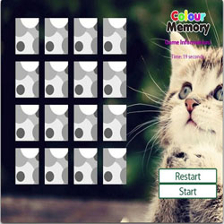
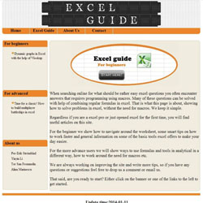

That I would come to live in Sweden was as much a surprise for others as it was for me, I didn’t expect to meet a boy that I would move together with was unexpected. To live in Sweden can be troublesome but it also gives me an interesting and fun life. You might think that Sweden isn’t the most fun country to live in. Well, personally I enjoy living here and I like living on an island.
yinyin li
I am a web developer with an IT education and work experience in html, css, javascript, php and mysql projects. I am interested in learning more technical skills and look forward to working as a web developer.
Download CVEducation
2012-2013 Swedish for immigrants, Åkersberga Finished courses A-D
2010-2011 Linnaeus University, Computer Science and Social Work. Exchange student for last year of Bachelor Degree.
2007-2010 Anhui University of TCM, Medical Software Development. Bachelor Degree
Work Experience
2013-now Freelancer web developer. Help small companies as well as my friends to take care of their web sites.
2013-2013 Production, LensOn AB Based on orders to make sure the products been delivered on time.
2013-2013 IT-Security Consultant (Internship), IT-säkerhetsföreningen SNSC. Based on Linux, I used OpenVas to test the system security. Based on the results, I solved the problems.
2012-2012 Shop assistant, Tempo, Ljusterö. Deal with the products and help with customers.
2011-2012 Administration and contact person, Tvia Inc, (USA), Zhuhai, China. Contact with customers, deal with prices, draft of contracts, produce variety of forms, contact with the person in the USA (mother company).
Extra-Curricular Activities
2012-now Meetup in many different groups and events, Stockholm. Meet similar skilled persons and talk about our experience. I mainly go to web meetups to listen to senior programmers' presentation and get some inspiration.
2010-2011 Chinese Class organizer and teacher, Linnaeus University. Promoting on social media, organized both international and Chinese students as well as creating study material and booking classroom.
2007-2009 Class representatives, Anhui University of TCM. Keep contact between students and teachers.
Bachelor courses in Computer Science
Advanced Mathematics 1 & 2
Basic Computing Method
Statistics Analysis
Programming with C
Analog Electronics
Programming with C++
Basic Numerical Methods
Discrete Mathematics
Programming with VB
Compiler Construction
Data Stucture
Database Theory
Computer Architecture Theory
File Indexing Method
Compiler Programming
Operating System
Computer Graphics
Algorithm Analysis
Interface in Programming
skills
HTML, DIV+CSS, Javascript, PHP, MySQL, Git/Github, Java core, J2EE, Tomcat6.0, Struts2, JDBC, Oracle, JSP, Linux
Tools I like to use:eclipsesublime
Projects

Color Memory Web Game
HTML, DIV+CSS, Javascript
Game function: Game begin with doubling every card of 8 different color cards and rendomly located in 16 places which called front face and hide with a back face card. whenever game begin, time begin to count. Using mouse to choose two cards every time to see front face, if front face are not same, those two cards hide again, if same, then take them away. Game finish with every cards are taken away.
By the project I learn more about how to use JQuery to make the function work efficent. And Firebug is a perfect tool to test this project

Blog/web site
PHP, MySQL, HTML, DIV+CSS, Javascript
Description: The whole web project has two versions: responsive and nonresponsive.
The project made up by two main parts which are user and admin. Pages are structured by template php files. All ariticle information in the page are from database.
On admin part, first has a log in function. In this part administrator can management the articles.
Plus: The link of the project is for people who wants to check the code. But the database is not attached in the source.
Contact Information
E-mail: liyinyin07@gamil.com